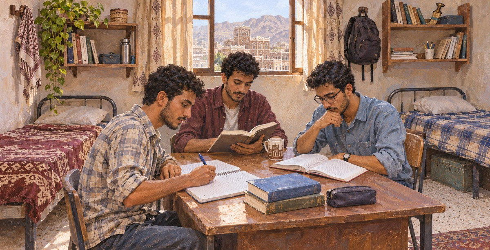
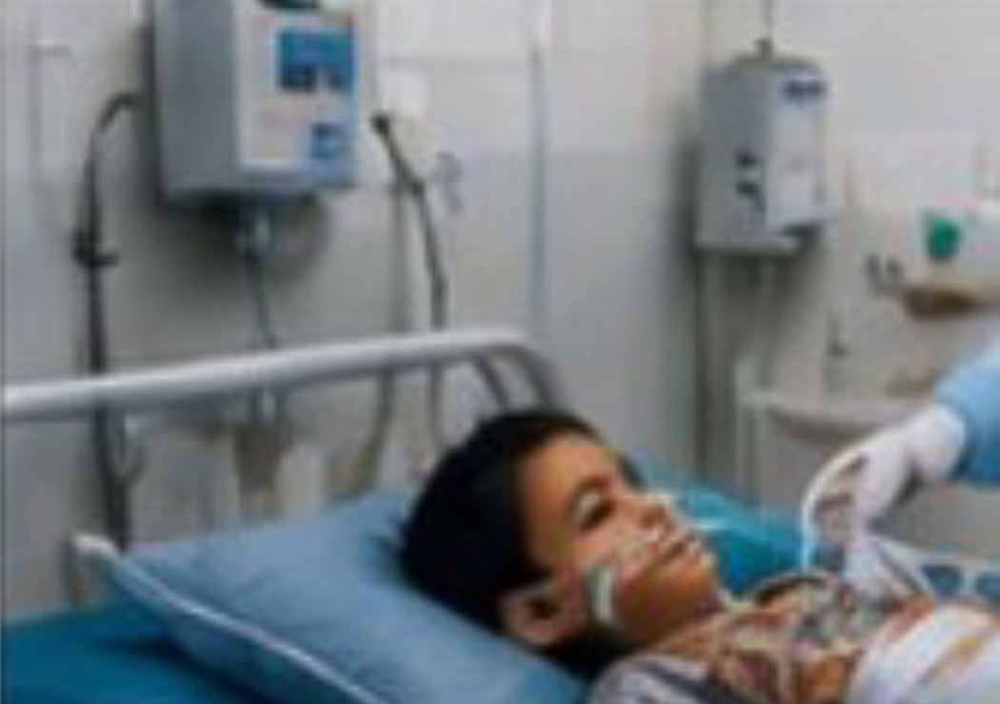

صحة • صورة أرشيفية توضيحيةعدن تراجع نتائج الحملة الطارئة للتحصين ضد الحصبة
اجتمعت وزارة الصحة في عدن الاثنين لمراجعة حملة التحصين ضد الحصبة والحصبة الألمانية بمشاركة شركائها. انعقد اجتماع التقييم في 16 نوفمبر، أما الحملة نفسها فنُفّذت بين 7 و12 نوفمبر.
التفاصيل في المصدر — صحيفة الأيام 
 ما وراء الخبر • أبو الأنوف الفقيه
ما وراء الخبر • أبو الأنوف الفقيهإعادة التموضع في باب المندب.. ماذا تنتظر تعز؟
إلى القارئ الذي وصلته على هاتفه عبارة «انهزمت القوات في باب المندب» وأقلقه ما تبعها من سخرية: أفهم قلقك. فالخبر الذي أُعلن هو خروج القوات من مطار ذوباب ومنطقة باب المندب. أما الجزم بأن عملية «فجر اليمن» انكسرت فذلك حكم أضافه أصحاب تلك المنشورات. من شاهد مقطع الانسحاب رأى جانباً مما جرى، وبقيت أسباب القرار ونتائجه أسئلة تستحق جواباً.
في بيان الأحد 15 نوفمبر، ربطت القوات المسلحة الجنوبية إعادة تموضعها بأمن عدن والمحافظات المجاورة وبمواصلة جهود فك الحصار عن تعز. وقراءتي لما أُعلن أن القيادة أرادت الحفاظ على مقاتليها وهي ترتب أولوياتها. أرى في ذلك ما يدعو إلى التريث والتفاؤل. ولا أملك ما يثبت الروايات المتداولة عن كمين إيراني محدد أو عن ترتيبات غرفة عمليات؛ وما لم تعلنه القيادة يبقى خارج ما أستطيع تأكيده للقارئ.
وأقول لزملائي الإعلاميين: من حق أهل عدن وتعز علينا أن نسأل عن كلفة الانسحاب وعن أثره في أمنهم، وأن ننشر أي تقصير تثبته الوقائع. وحين ننقل وصف «الهزيمة» في عنوان، علينا أن نسأل أولاً: مَن قاله، وعلى أي دليل؟ فالجندي له أهل يقرؤون الخبر، وفي تعز أسرة تنتظر أن تعرف هل صار طريق المستشفى آمناً. هؤلاء يستحقون خبراً دقيقاً، وسؤالاً نعود إلى المسؤول بإجابته، بعيداً عن السخرية والوعود المتعجلة.
وبالتوازي مع الميدان، ثمة عمل دبلوماسي يمكن متابعته علناً. دعا البرلمان العربي في أكتوبر إلى دعم التصنيف، وأقرّ مجلس النواب اليمني يوم الاثنين 16 نوفمبر النص النهائي لرفعه إلى رئيس مجلس القيادة لإصداره. وما أرجوه أن يخدم هذا التحرك حماية المدنيين والبحّارة ومساءلة من يموّل الاعتداءات.
ما زلت أرجو أن تؤتي «فجر اليمن» ثمارها، إن شاء الله. وأصدق خبر أتمنى أن ننشره لأهل تعز هو أن مريضاً وصل إلى مستشفاه، وأن شاحنة غذاء عبرت، وأن مسافراً عاد إلى أسرته آمناً. بذلك أقيس الانفراجة التي ننتظرها، وعلى ذلك سأتابع معكم ما يأتي.
أبو الأنوف الفقيه
نص بيان القوات • 15 نوفمبر بيان البرلمان العربي • 27 أكتوبر تقرير جلسة مجلس النواب • 16 نوفمبر